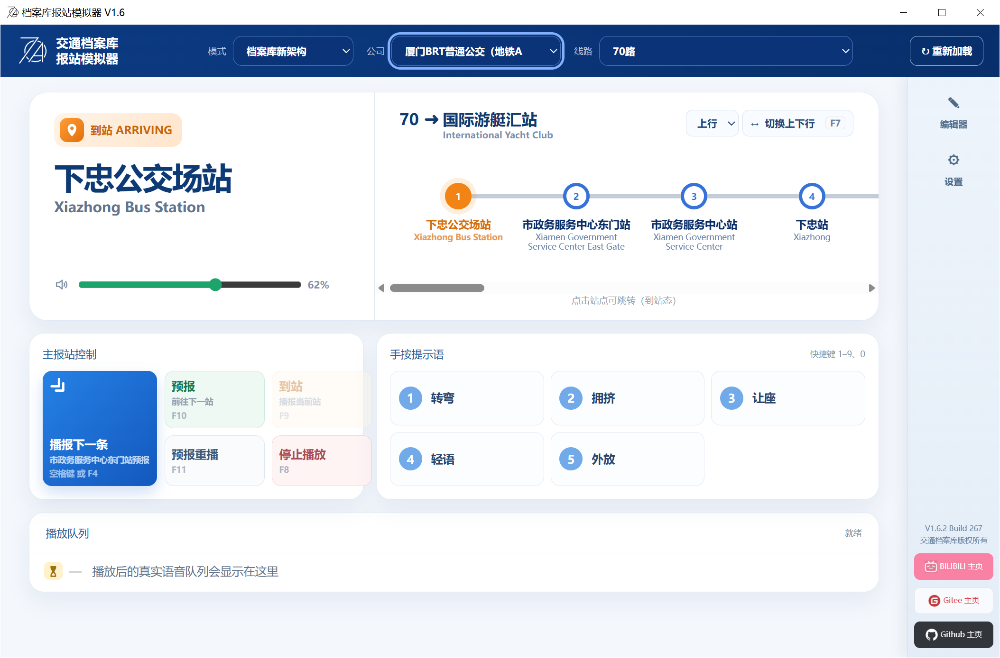
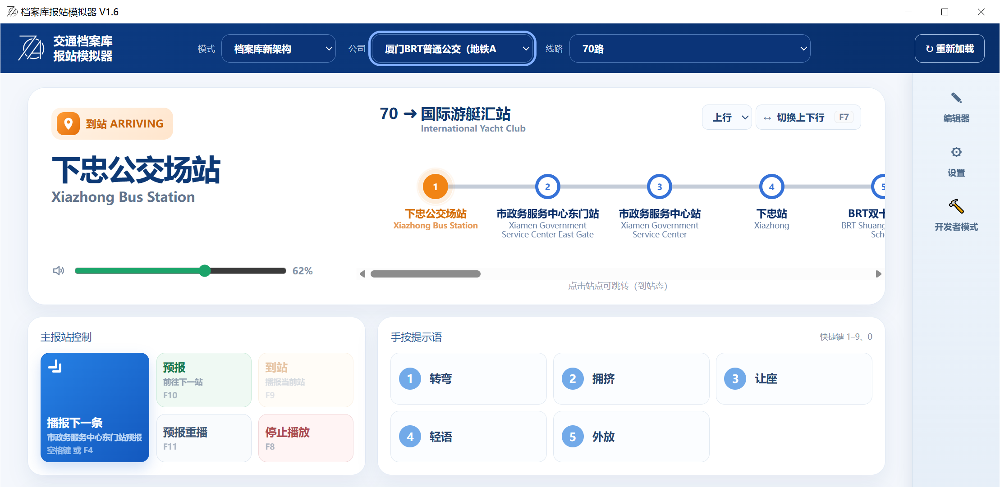
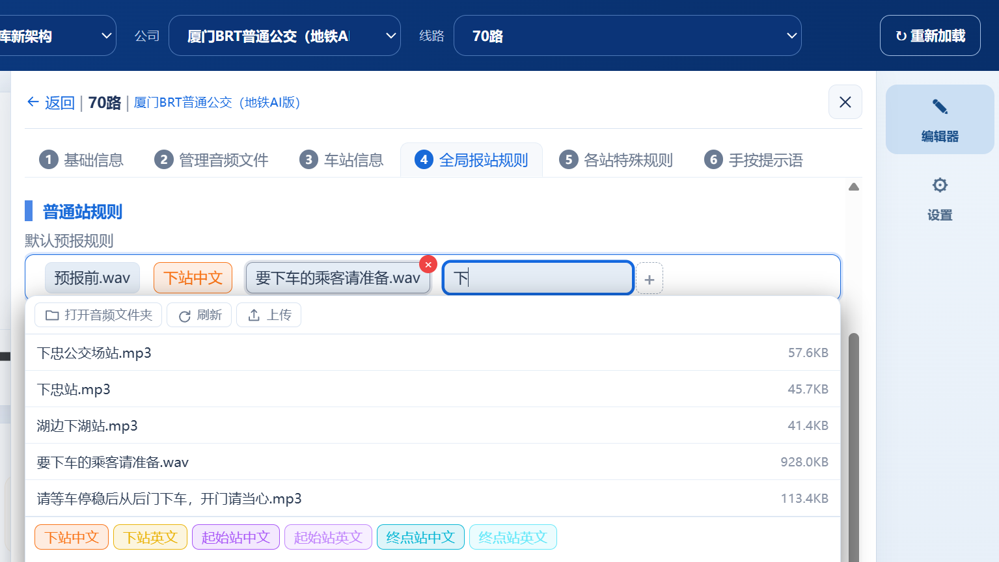
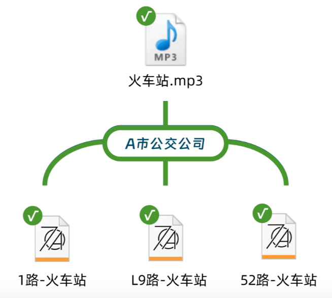
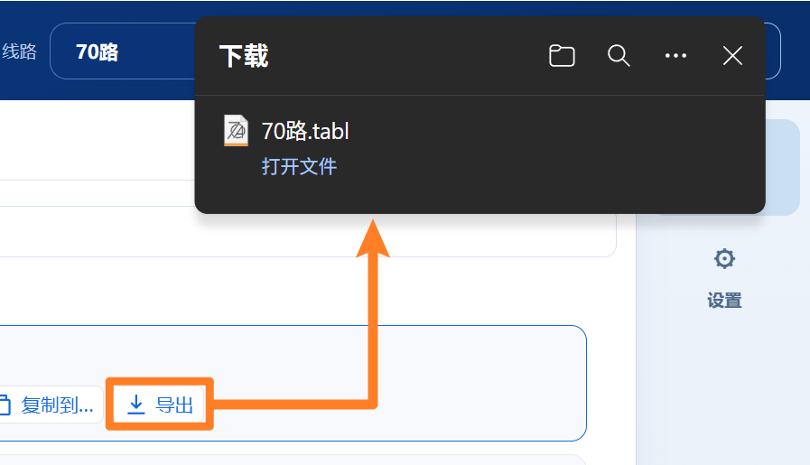
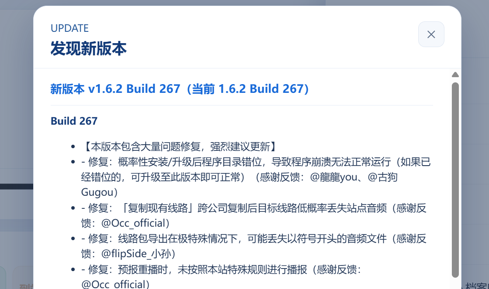

清晰好用的播放界面
一个按键自动播放下一条，线路状态和播放顺序一目了然，完整模拟实际报站流程。
交通档案库 · TABBSS
从播放、编辑到分享，一套桌面工具完成公交报站线路的制作、维护与模拟运行。
免费使用 · Windows 10 / 11 · Gitee 国内下载

产品宣传片
从播放、编辑到分享，跟随宣传片快速浏览档案库报站模拟器的核心工作流。
视频无法播放？前往哔哩哔哩观看
核心能力
从真实播放到复杂规则维护，把原本分散、重复的工作集中到一个清晰的工作台。

一个按键自动播放下一条，线路状态和播放顺序一目了然，完整模拟实际报站流程。

自动识别站名和站序；标签式规则编辑器边输入边匹配文件，复杂规则也能轻松完成。
支持首站、普通站和终点站规则模板，也能针对任意站点单独设置特殊播报规则。

一键将规则应用到同公司其他线路；媒体文件集中共用，一处更新即可同步生效。

线路文件一键导出、一键导入，方便在好友和协作者之间交换完整报站资料。

支持导入其他报站器资料，自动检查正式版本；软件完全免费，线路无需提交审核。
获取最新版
适用于 Windows 10 / 11。安装后即可导入或创建你的报站线路。